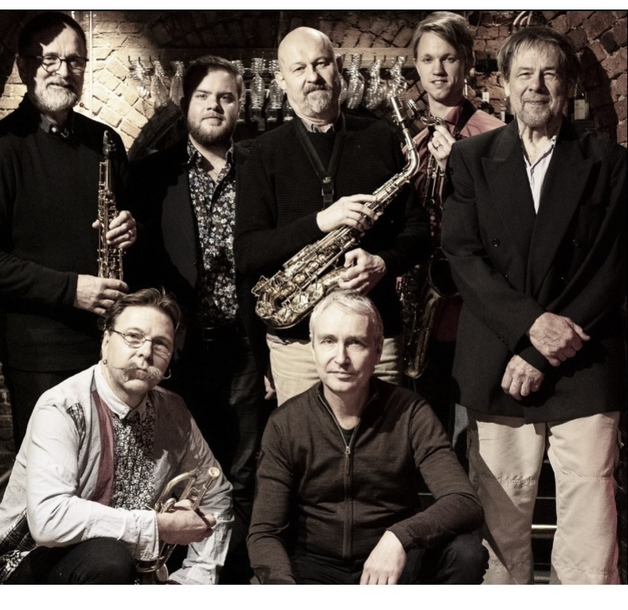

Evenemang

Änglaspel 50-årsjubileum på PlayHouse, Valand
19/9 kl 19 Valand, Göteborg Änglaspel bildades 1976 av Stefan Forssén piano, Matz Nilsson bas och Anders Kjellberg trummor. Ett år senare tillkom Mikael Godée på saxofoner. Några år senare utvidgades bandet till sextett och senare till septett med sättningen 1 trumpet, 3 saxar och komp, vilket det fortfarande är. Många musiker har genomströmmat bandet (bl a Ann-Sofie Söderqvist och Anders Bergcrantz tp, Stefan Isaksson, Anders Ekholm och Johan Borgström ts, Anders Jormin b och Erik Dahlbäck dr), men lejonparten i den nuvarande gruppen har varit med i mer än 40 år. Dock, Martin Svanström ts var långt ifrån född då gruppen bildades. Änglaspel har med förkärlek samarbetat med olika typer av artister; sångare, skådisar, poeter, "klassiska" musiker, körer, dansare, barnkörer, m.m och har gjort ett flertal turnéer i Europa och spelat in 7 plattor. Många vittnesmål från publiken visar att gänget ofta uppskattas av lyssnare som "egentligen inte alls gillar jazz"!Annika Sehlström och Stefan Forssén
30/9 kl 10 Råda Rum, Kyrkv. 45, MölnyckeÄnglaspel på Gerlesborgsskolan
3/10 kl 19.30 Gerlesborgsskolan Konserten går av stapeln kl 19.30, 2 sets med kaffe o folköl i pausen.Körkonsert med Chorus Novus
18/10 kl 17.00 Galleri Adde Zetterqvist, Storjord, Nordnorge Körkonsert med Chorus Novus under Jon Fyllings ledning.SKJ-trion på Konstepidemins dag
23/10 kl 18 8n på Konstepidemin, GöteborgKörkonsert med Göteborgs Kammarkör
25/10 kl 16.00 Ansgarkyrkan, Mågeveien 33, Köpenhamn NV Körkonsert med Göteborgs Kammarkör under Gunnar Erikssons ledning.Körkonsert med Göteborgs Kammarkör
15/11 kl 18.00 Johannebergskyrkan, Göteborg Körkonsert med Göteborgs Kammarkör.Tätt intill
20/11 kl 19.00 Folkkulturcentrum, Hjorthagen, Stockholm "Tätt intill" med sångerskan Maria af Malmborg.Tätt intill 2
21/11 kl 19.00 Café Bristol, Sundbyberg "Tätt intill" med sångerskan Maria af Malmborg. Samma program som på Folkkulturcentrum den 20/11.Musik- och berättarkväll på Nedergårdsgatan
29/11 kl 18.00 Nedergårdsgatan 22B, Kålltorp, Göteborg Med sångerskan Astrid Roxenholt.Änglaspel + Lena Willemark
21/2 (2027) kl 16 Ölands FolkhögskolaKontakt
Mailadress:
stefanforssen@konstepidemin.sePostadress:
Konstepidemin, Hus 13413 14 Göteborg